计算机系统：考点精讲 + 真题详解
本章对应官方教程第 3 章，在上午「综合知识」中稳定占 4—6 分。五类计算题（Cache、流水线、地址划分、海明码、可靠性）几乎每年必考。本资料逐条讲透概念、给出真实原理插图（可放大细看）、并按「先讲道理、再列公式、最后逐步推导」的方式拆解 31 道真题。
计算机系统层次与组成
约 1 分1.1 为什么要把计算机“分层”
教程计算机系统是一个层次化系统。分层的目的只有一个：让每一层只暴露简单的接口，把复杂的实现细节藏起来。这样写应用的人不必懂指令集，写编译器的人不必懂门电路，各层可以独立演进。
补充一个便于记忆的理解方式：分层就像「点外卖」——你只需对 App 说「下单」（上层接口），完全不用关心后厨怎么切菜、骑手走哪条路（下层实现）。下层换人换方法，只要接口不变，上层毫无感知。这就是分层的价值。
从下往上，计算机系统可分为三层：硬件层（裸机）→ 系统层 → 应用层。其中硬件层内部还可再细分为三级，这三级的划分是常考细节：
- 硬联逻辑级：由门电路、触发器构成，是计算机最底层，直接用硬件逻辑实现功能。
- 微程序级：由微指令集（微程序）构成，一条机器指令由若干条微指令解释执行。
- 传统机器级：即本机指令系统（机器语言），程序员通常所说的「机器」就是这一级。
系统层包含两类核心软件：一是操作系统，负责管理软硬件资源；二是语言处理程序（编译程序、汇编程序、解释程序），负责把高级语言翻译为机器语言。
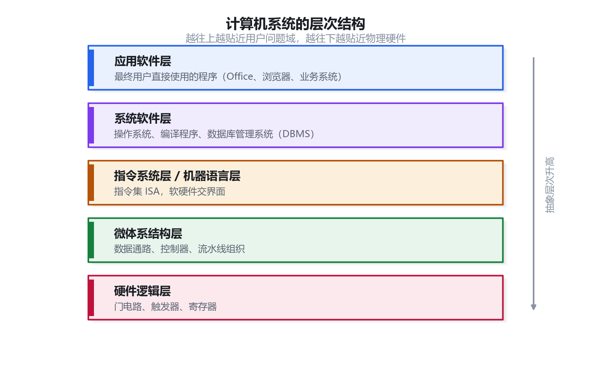
1.2 冯·诺依曼结构与五大部件
教程现代计算机普遍采用冯·诺依曼（von Neumann）结构，其核心思想是「存储程序」——程序和数据以二进制形式存放在同一个存储器中，计算机自动按地址顺序取出指令并执行。它把基本硬件划分为五大部件：运算器、控制器、存储器、输入设备、输出设备。
- 运算器（ALU）：完成算术运算（加、减、乘、除）与逻辑运算（与、或、非、异或）。
- 控制器（CU）：计算机的「指挥中心」，负责取指令、分析指令、执行指令，产生各种控制信号。
- 存储器：存放程序和数据。
- 输入设备 / 输出设备：分别是人机交互的入口与出口，合称外设。
其中运算器 + 控制器 = 中央处理器（CPU）。下图把五大部件与 CPU 的包含关系、以及指令流与数据流的走向画在了一起：
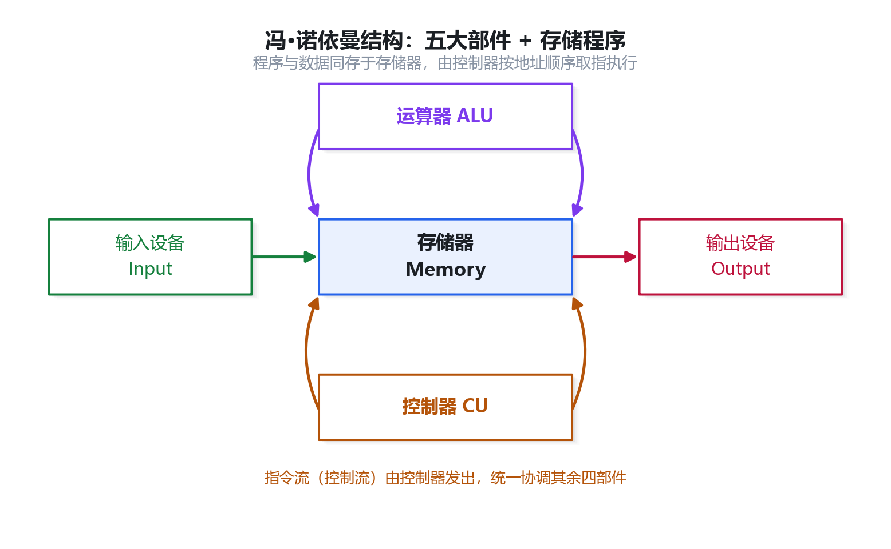
CPU 内部的关键寄存器是选择题的常客，务必区分「它是什么」与「它归哪个部件」：
| 部件 | 功能 | 归属部件 |
|---|---|---|
| 运算器 ALU | 算术运算与逻辑运算 | 运算器 |
| 指令寄存器 IR | 暂存 CPU 当前正在执行的指令 | 控制器 |
| 程序计数器 PC | 存放即将执行的下一条指令的地址，并具有计数功能 | 控制器 |
| 地址寄存器 AR | 保存 CPU 当前要访问的内存单元地址 | 控制器 |
| 指令译码器 ID | 将指令中的操作码解析为对应的操作 | 控制器 |
| 通用寄存器组 | 暂存运算的中间结果 | 运算器 |
一条指令的执行三步骤
- 取指令：PC 将下一条指令地址送上地址总线 → 从主存读出该指令 → 存入指令寄存器 IR。
- 分析指令：指令译码器（ID）解析 IR 中的操作码，产生控制信号。
- 执行指令：取出源操作数，按操作码完成指定的运算或传送。
1.3 软件分类与固件
- 系统软件：操作系统、语言处理程序、服务性程序、数据库管理系统（DBMS）、网络软件等，用于管理资源、提供服务。
- 应用软件：面向具体业务需求开发的软件，如办公软件、行业系统。
- 固件（Firmware）：固化在 ROM / EPROM / EEPROM 中、具有软件功能的硬件。它介于软硬件之间，是选择题的经典考点。
1.4 冯·诺依曼结构与哈佛结构
教程两种结构最根本的区别在于指令和数据是否分开存储，由此带来「能否同时取指与取数」的效率差异。
| 对比项 | 冯·诺依曼（普林斯顿）结构 | 哈佛结构 |
|---|---|---|
| 存储器组织 | 程序指令与数据合并存储（同一存储空间） | 程序指令与数据分开存储 |
| 访存特点 | 取指与取数共用总线，不能同时进行 | 可同时取指与取数，效率更高 |
| 典型应用 | 通用计算机（x86） | DSP、嵌入式处理器 |
嵌入式常见芯片（高频概念题）
- MCU（微控制器 / 单片机）：体积小、功耗低、成本低，将 CPU、存储器、外设集成在一块芯片。
- DSP（数字信号处理器）：专为数字信号处理设计，常采用哈佛结构。
- SoC（片上系统）：将微处理器、模拟 IP 核、数字 IP 核和存储器集成在单一芯片上的微小型系统，是「面向特定用途的标准产品」，属于一种技术而非单块处理器芯片。
1.5 真题演练
查看答案与解析
答案：存储器
冯·诺依曼结构明确划分出五大部件：运算器、控制器、存储器、输入设备、输出设备。其中运算器与控制器合称 CPU，输入/输出设备合称外设。
查看答案与解析
答案：B
控制器（CU）承担「取指—分析—执行」的完整控制流程，是 CPU 的指挥中心；运算器（ALU）只负责算术与逻辑运算；存储器负责存放程序和数据；寄存器只是 CPU 内部的小容量高速暂存部件。
查看答案与解析
答案：B
SoC（System on Chip，片上系统）的本质是把整个系统的关键部件集成到一块芯片上，它描述的是一个「微小型系统」乃至一种设计技术，而不是单纯的一块处理器芯片。A、C、D 均是 SoC 的准确特征。
查看答案与解析
答案：A
PC 属于控制器部件，用于存放下一条要执行指令的地址。
查看答案与解析
答案：B
固件的定义即为「固化在 ROM/EPROM/EEPROM 中、具有软件功能的硬件」，兼有软件的逻辑功能与硬件的物理形态。A、C、D 都是纯软件，不属于固件。
存储系统：层次结构、Cache 与虚拟存储
约 8~12 分2.1 存储体系金字塔：为什么要有 Cache
本小节来自教材考点，是理解 Cache 一切问题的地基。
CPU 的运算速度以「纳秒甚至皮秒」计，而主存（内存）取数要几十纳秒，磁盘更是毫秒级——三者相差好几个数量级。若让 CPU 每次都直接访问慢速主存，其绝大部分时间都在「等数据」，昂贵的运算能力被白白浪费。解决办法不是造一种又大又快的存储器（物理上做不到，越快越贵、容量越小），而是把不同速度、不同容量的存储器按层级堆叠起来，靠「局部性原理」让 CPU 大多数时候访问到的是快的那一层。
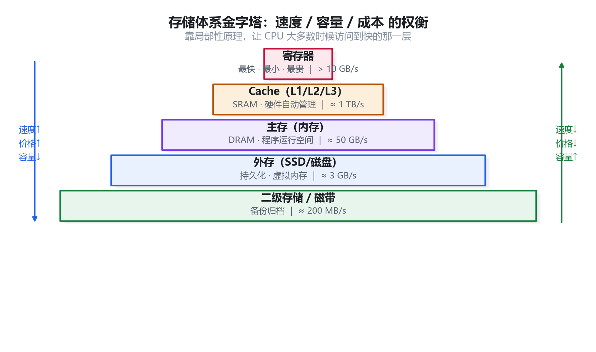
金字塔自上而下共分四层，越往上速度越快、容量越小、单位成本越高：
| 层次 | 典型访问速度 | 容量量级 | 由什么管理 | CPU 能否直接访问 |
|---|---|---|---|---|
| 寄存器 | 1 个时钟周期内 | 几百字节~几 KB | 编译器/程序员 | 是 |
| Cache（高速缓存） | 几个时钟周期 | 几 MB | 硬件自动 | 是 |
| 主存（内存） | 几十个时钟周期 | 几 GB~几十 GB | 操作系统 | 是 |
| 辅存（磁盘/SSD） | 毫秒级 | TB 级 | 操作系统 | 否，需先调入主存 |
局部性原理——Cache 有效的理论依据
以下用一句话补充说明，帮助你记住 Cache 为什么真的有用。
- 时间局部性：刚被访问过的数据，很快可能再次被访问（如循环体里的变量）。
- 空间局部性：刚被访问过的数据，其相邻地址的数据很快可能被访问（如数组顺序遍历）。
正因为程序运行时访问地址呈现这种「聚簇」特征，只需把主存中最可能被用到的少量数据提前搬进 Cache，就能让命中率高达 90% 以上，从而把平均访问时间拉近到 Cache 的水平。
2.2 Cache 的三种地址映射方式
本小节来自教材考点，是本节最核心的图表题来源。
Cache 容量远小于主存，所以主存的每一块（Block）要按规则「映射」到 Cache 的某一行（Line）。规则不同，带来冲突率与硬件复杂度的权衡。若理解不了映射规则，直接看图：
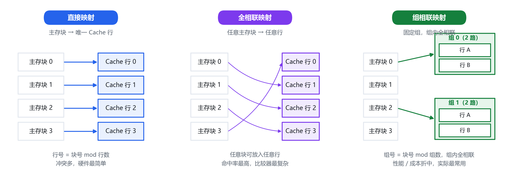
| 映射方式 | 主存块可以放到哪 | 地址划分 | 冲突率 | 查找速度 | 硬件成本 |
|---|---|---|---|---|---|
| 直接映射 | 唯一固定的行：块号 mod Cache 行数 | 标记 + 行号 + 块内地址 | 最高 | 最快（只需比对 1 行） | 最低 |
| 全相联映射 | 任意一行都可以 | 标记 + 块内地址 | 最低 | 最慢（需与全部行比对） | 最高 |
| 组相联映射 | 固定的组内任意一行 | 标记 + 组号 + 块内地址 | 居中 | 居中 | 居中 |
Cache 的命中率与平均访问时间
设命中率为 H，Cache 访问周期为 Tc，主存访问周期为 Tm，则：
（1−H）即未命中率，未命中时要先访问主存再把整块调入 Cache
逐符号解释：H 是「直接命中、只花 Cache 时间」的概率，权重为 H；(1−H) 是「未命中、不得不付出主存时间」的概率，权重为 (1−H)。两者加权相加，就是平均每次访问花的时间。H 每提高一点，Ta 就明显下降，所以提高命中率是 Cache 设计的核心目标。
已知 Cache 存取周期 1ns、主存存取周期 5ns，命中率 95%，求平均访问时间。
Ta = 0.95 × 1ns + 0.05 × 5ns = 0.95 + 0.25 = 1.2ns
可见平均访问时间（1.2ns）几乎贴近 Cache 的 1ns，远低于主存的 5ns——这正是「金字塔」思路的威力。
2.3 虚拟存储器与页面置换
本小节来自教材考点，常以「缺页/置换算法」形式出题。
主存容量有限而程序可能很大，虚拟存储器用「主存+辅存」两级配合，借助地址映射让程序员看到一个大得多的逻辑地址空间。程序被切成「页」，运行时只把当前用到的页调入主存；主存放不下时，就需要页面置换算法决定淘汰哪一页。
| 算法 | 淘汰对象 | 特点 |
|---|---|---|
| OPT（最佳） | 未来最久不被访问的页 | 理论最优，无法实现，仅作评价基准 |
| FIFO（先进先出） | 最早调入的页 | 简单，可能出现 Belady 异常（页框增多缺页反而增加） |
| LRU（最近最少使用） | 最久未被访问的页 | 利用时间局部性，效果好，实现开销较大 |
2.4 真题演练
查看答案与解析
答案：B
存储层次中，寄存器—Cache—主存的调度由硬件自动完成（对程序员透明）；而主存—辅存之间的调入调出（即虚拟存储）由操作系统负责管理。
查看答案与解析
答案：B
代入公式 Ta = H×Tc + (1−H)×Tm = 0.9×2 + 0.1×10 = 1.8 + 1.0 = 2.8ns。
查看答案与解析
答案：C
地址中出现「组号」字段，说明主存块映射到固定的一组、组内可任意放置，这正是组相联映射的定义。
查看答案与解析
答案：C
FIFO 算法在物理块数增加时，缺页次数可能反而增加，这就是 Belady 异常。LRU、OPT 属于栈式算法，不具备该性质。
指令流水线：时空图与性能计算
约 5~8 分3.1 从「串行」到「流水」
本小节来自教材考点，是流水线计算题的原理基础。
一条指令的执行可分为「取指—分析—执行」若干阶段。如果串行执行，则前一条指令走完所有阶段，后一条才能开始，大量硬件部件在大部分时间里处于空闲。流水线借鉴工厂装配线的思想：把指令执行拆成多个阶段，每个阶段由独立的部件负责，多条指令在时间上重叠推进——当第 1 条指令进入「分析」时，第 2 条指令同时进入「取指」，部件被连续利用。
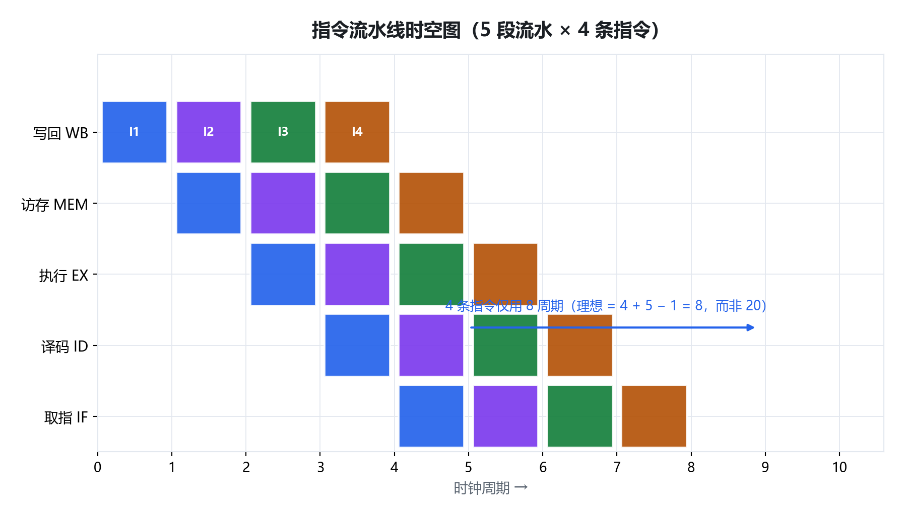
图中横轴为时间（时钟周期 Δt），纵轴为各阶段。可以看到：前 k−1 个周期是「填流水」的过渡期，之后每个周期都能流出一条指令，达到吞吐率的最大值。
3.2 三个核心公式
本小节来自教材考点，公式必须记牢并会代入。
设指令条数为 n，流水线段数为 k，每段耗时（时钟周期）为 Δt：
② 执行时间 T = (k + n − 1) × Δt
③ 吞吐率 TP = n / T 加速比 S = 串行时间 / T = n·k·Δt / T
逐符号解释：k 是段数，第一段要花 k 个周期才能「流出」第一条结果；此后每多一条指令只需再加 1 个周期，故共 k + (n − 1) = k + n − 1 个周期。流水线周期由最慢的一段决定（木桶效应）——这解释了为什么各段要尽量均衡。
某指令流水线分 5 段，每段耗时均为 2ns，连续执行 100 条指令。求执行时间、吞吐率与加速比。
Δt = 2ns（最长段）
T = (5 + 100 − 1) × 2ns = 104 × 2ns = 208ns
吞吐率 TP = 100 / 208ns ≈ 0.48 条/ns（即约每 2ns 一条）
串行时间 = 100 × 5 × 2ns = 1000ns，加速比 S = 1000 / 208 ≈ 4.8
可见理论上加速比接近段数 5，但达不到 5——差距来自「流水线充满」前那段无法重叠的过渡时间。
3.3 真题演练
查看答案与解析
答案：B
T = (k + n − 1) × Δt = (6 + 200 − 1) × 3ns = 205 × 3ns = 615ns。
查看答案与解析
答案：C
流水线周期等于各段中「耗时最长」的一段，即 4ns。这样慢段能完成，其余段落则处于等待。
查看答案与解析
答案：D
吞吐率 TP = n / [(k + n − 1)·Δt]，只与指令条数 n、段数 k、各段时间 Δt 有关。寄存器的「编号」只是标识，不影响吞吐率。
总线系统与带宽计算
约 3~5 分4.1 总线的分类与结构
本小节来自教材考点，是总线带宽计算的背景知识。
总线是连接 CPU、内存、I/O 设备之间传送信息的一组公共信号线。所有部件挂接在同一组线上，任一时刻只能有一个部件发送、多个部件接收。按传送的信息类型，总线分为三类：
| 类型 | 传送内容 | 方向 |
|---|---|---|
| 数据总线 DB | 数据（指令、操作数） | 双向 |
| 地址总线 AB | CPU 发出的地址 | 单向（CPU→外部） |
| 控制总线 CB | 控制信号、时序信号、状态信号 | 双向（总体） |
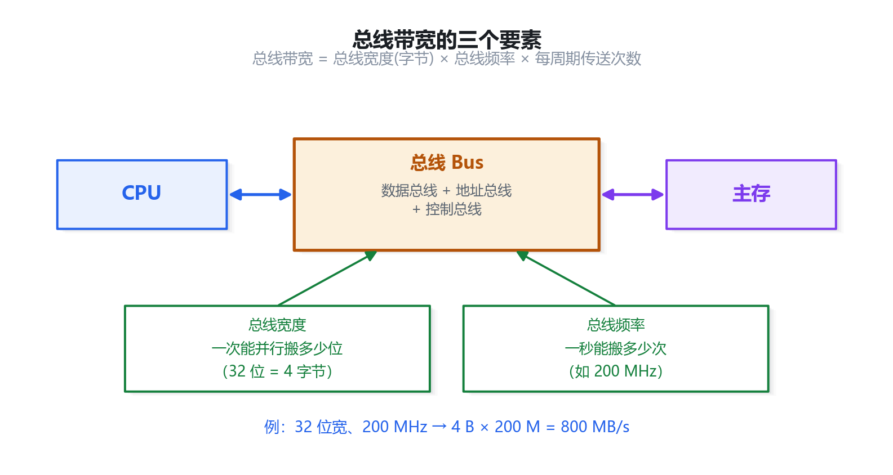
4.2 总线带宽的三个要素
本小节来自教材考点，是计算题必考公式。
总线带宽（数据传输率）衡量总线每秒能传多少数据，取决于三个要素：
总线宽度单位要换算成「字节」：32 位 = 4 字节，64 位 = 8 字节
逐符号解释：总线宽度（数据线根数）决定「一次能并行搬多少位」；总线频率决定「一秒钟能搬多少次」；若总线支持在一个时钟周期内多次传输（如双沿传输），还要乘上这个倍数。三者相乘即为带宽。
某总线数据线宽度为 32 位，总线时钟频率为 200MHz，每个时钟周期传送 1 次数据。求总线带宽。
宽度 = 32bit = 4 字节
带宽 = 4 字节 × 200×10⁶ /s × 1 = 800 MB/s
若改为「每个时钟周期传送 2 次数据」（双沿），带宽即为 1600 MB/s。
4.3 真题演练
查看答案与解析
答案：B
宽度 = 64bit = 8 字节，带宽 = 8 字节 × 133×10⁶/s × 1 ≈ 1064 MB/s。
查看答案与解析
答案：B
地址总线由 CPU 单向发出地址码，用于选通存储单元或 I/O 端口，方向单一（CPU→外设）。数据总线双向；控制总线整体双向。
查看答案与解析
答案：B
n 位地址总线可寻址 2ⁿ 个单元，即 2²⁴ = 16M 个单元；按字节编址即 16MB。
校验码：奇偶校验、海明码与 CRC
约 5~7 分5.1 为什么要校验：数据在传输中会出错
本小节来自教材考点，是理解三种校验码的出发点。
数据在存储、传输过程中可能因电磁干扰等发生位翻转（0 变 1 或 1 变 0）。校验码的基本思路是：在原始数据之外附加若干「冗余位」，接收方用这些冗余位反查数据是否出错、错在哪一位，从而纠错或重传。冗余位越多，检错/纠错能力越强，但传输效率越低。
| 校验码 | 冗余位与数据位关系 | 能否检错 | 能否纠错 | 典型应用 |
|---|---|---|---|---|
| 奇偶校验 | 1 位校验位 | 能检 1 位错 | 不能纠错 | 简单内存校验 |
| 海明码 | 2ⁿ ≥ n+k+1 | 能检错 | 能纠 1 位错 | 内存 ECC |
| CRC（循环冗余） | k 位校验位 | 检错能力强 | 一般不纠错（重传） | 网络通信、磁盘 |
5.2 海明码：冗余位数怎么定
本小节来自教材考点，公式题必考。
海明码把校验位分散插入数据位的 2 的幂次位置上（第 1、2、4、8…位），每个校验位负责一组数据的奇偶。设数据位为 k 位、校验位为 n 位，要能定位出错位置，必须满足：
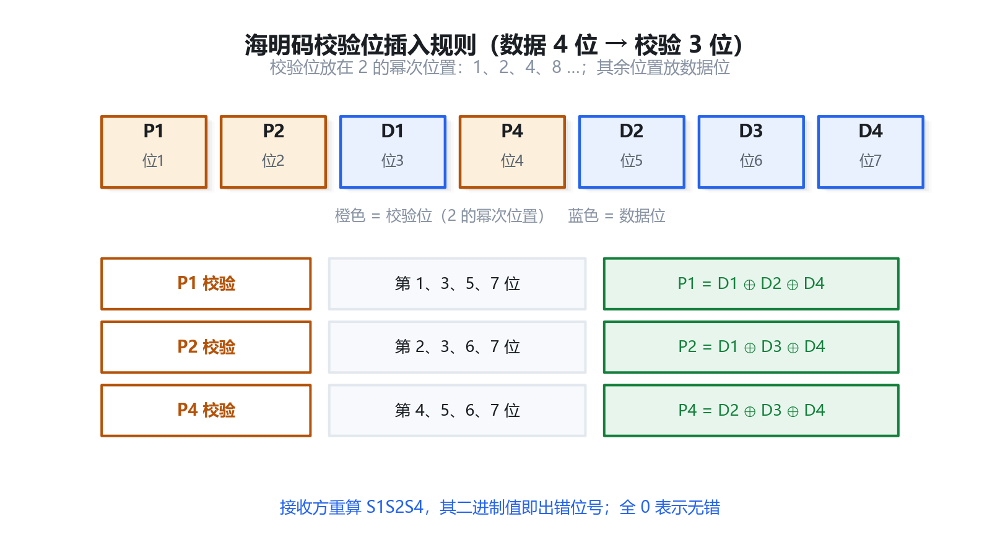
n 为校验位数，k 为数据位数，"+1" 表示还要能表示「无错」这一状态
逐符号解释：n 位校验位共有 2ⁿ 种组合，要能表示「n+k 个位置中哪一位出错」共 n+k 种情况，再加上「全部正确」1 种，因此需 2ⁿ ≥ n+k+1。求 n 时用「试算」最快：从小到大代入 n=1、2、3… 直到满足。
求数据位 k = 8 时，海明码所需的校验位数。
试 n=3：2³ = 8 ≥ 3+8+1 = 12？不成立（8 < 12）
试 n=4：2⁴ = 16 ≥ 4+8+1 = 13？成立 ✓
故需校验位 n = 4 位，海明码总位数 = 8 + 4 = 12 位。
5.3 真题演练
查看答案与解析
答案：B
代入 2ⁿ ≥ n + k + 1，其中 k = 16。试 n = 4：16 ≥ 21？不成立。试 n = 5：32 ≥ 22？成立。故至少需 5 位。
查看答案与解析
答案：A
奇偶校验只用 1 位校验位，能发现「奇数个位出错」，但无法确定是哪一位出错，因此只能检错、不能纠错（需配合重传）。
查看答案与解析
答案：C
CRC 的核心优势是检错能力强且实现简单，通常并不用于「纠正」错误，而是发现错误后请求重传。A、B、D 均为 CRC 的正确描述。
系统可靠性：串并联模型与计算
约 3~5 分6.1 串联与并联：两种基本的可靠性模型
本小节来自教材考点，是可靠性计算的核心。
系统由多个部件组成，只要有一个部件失效是否会导致整个系统失效，取决于部件的连接关系。「串联」表示环环相扣、一个失效全盘皆输；「并联」表示互为备份、全部失效才失效。系统可靠性 R 指系统在规定条件下、规定时间内正常工作的概率。
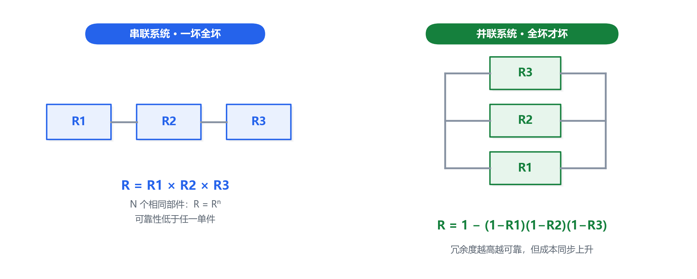
并联系统：R = 1 − (1−R₁)(1−R₂)…(1−Rₙ) （全部失效才失效）
逐符号解释：串联时所有部件都要正常工作，是「与」关系，概率连乘；并联时只要有一个工作即可，先算「全部失效」的概率 (1−R₁)(1−R₂)…，再用 1 减去它得到「至少一个工作」的概率。并联能显著提高可靠性，这正是冗余备份的理论依据。
3 个可靠度均为 0.9 的部件，分别按串联、并联组成系统，求系统可靠度。
串联：R = 0.9 × 0.9 × 0.9 = 0.729（低于单个部件）
并联：R = 1 − (1−0.9)³ = 1 − 0.001 = 0.999（远高于单个部件）
对比可见：同样的部件，连接方式不同，可靠性相差极大。这就是「冗余设计」的价值。
6.2 真题演练
查看答案与解析
答案：B
串联系统可靠度为各部件可靠度之乘积，即 R × R × R = R³。
查看答案与解析
答案：C
R = 1 − (1−0.8)(1−0.8) = 1 − 0.2×0.2 = 1 − 0.04 = 0.96。
查看答案与解析
答案：C
先算串联支路：R串 = 0.9 × 0.9 = 0.81；再与部件 3 并联：R = 1 − (1−0.81)(1−0.9) = 1 − 0.19×0.1 = 1 − 0.019 = 0.981。
指令系统：CISC/RISC 与寻址方式
约 4~6 分7.1 指令格式与寻址方式
本小节来自教材考点，是理解寻址题的框架。
指令由「操作码」和「地址码」两部分组成：操作码告诉机器「做什么」，地址码告诉机器「操作数在哪里」。地址码可能不直接是数据本身，而是「去哪里找数据」的线索——这种寻找操作数的方式就叫寻址方式。
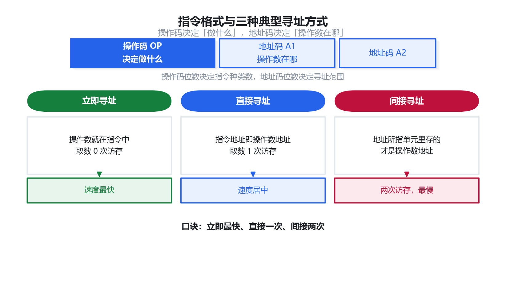
| 寻址方式 | 操作数在哪 | 取数次数 | 特点 |
|---|---|---|---|
| 立即寻址 | 地址码字段本身就是操作数 | 0 次访存 | 最快，但操作数大小受限 |
| 直接寻址 | 地址码即操作数的主存地址 | 1 次访存 | 简单直观 |
| 间接寻址 | 地址码指向的单元里存的才是地址 | 2 次访存 | 灵活，可扩大寻址范围 |
| 寄存器寻址 | 操作数在寄存器中 | 0 次访存 | 速度快 |
| 寄存器间接寻址 | 寄存器里存的是操作数地址 | 1 次访存 | 常用于数组 |
逐条看「取数次数」：立即寻址操作数就在指令里，不用访存；直接寻址要按地址码去主存取一次；间接寻址要先取地址、再按地址取数据，共两次。「间接」二字意味着「多绕一层」，这是判断的关键。
7.2 CISC 与 RISC
本小节来自教材考点，常以对比表形式出题。
指令系统的设计有两条技术路线：CISC（复杂指令集）追求「功能强、指令多」，RISC（精简指令集）追求「指令少而精、执行快」。二者的对比是高频考点。
| 比较项 | CISC（复杂指令集） | RISC（精简指令集） |
|---|---|---|
| 指令数量 | 多（几百条） | 少（几十条） |
| 指令长度 | 不固定 | 固定 |
| 寻址方式 | 多而复杂 | 少而简单 |
| 访存指令 | 多数指令都可访存 | 只有 load/store 访存 |
| 通用寄存器 | 较少 | 较多 |
| 控制器实现 | 以微程序控制为主 | 以硬布线控制为主 |
| 指令流水线 | 较难实现 | 易于实现 |
7.3 真题演练
查看答案与解析
答案：B
地址码字段「就是」操作数的主存地址，按此地址访存一次即得操作数，这是直接寻址的定义。
查看答案与解析
答案：D
「采用微程序控制、指令复杂」是 CISC 的特征。RISC 指令精简、长度固定、只有 load/store 访存、通用寄存器多，且多用硬布线控制以支持流水线。
查看答案与解析
答案：C
立即寻址的操作数直接包含在指令中，取指时一并取出，无需额外访存，故速度最快。直接寻址需访存 1 次，间接寻址需 2 次，寄存器间接寻址需 1 次。
输入输出技术：五种 I/O 控制方式
约 4~6 分8.1 从「CPU 死等」到「DMA 接管」
本小节来自教材考点，是五种 I/O 方式对比的主线。
CPU 与外部设备之间速度悬殊，如何高效地完成数据交换，是 I/O 技术的核心问题。这里的关键矛盾是：CPU 越少干预 I/O，就能腾出越多算力去做运算。五种 I/O 控制方式本质上就是「CPU 参与程度由高到低」的一条演进链。
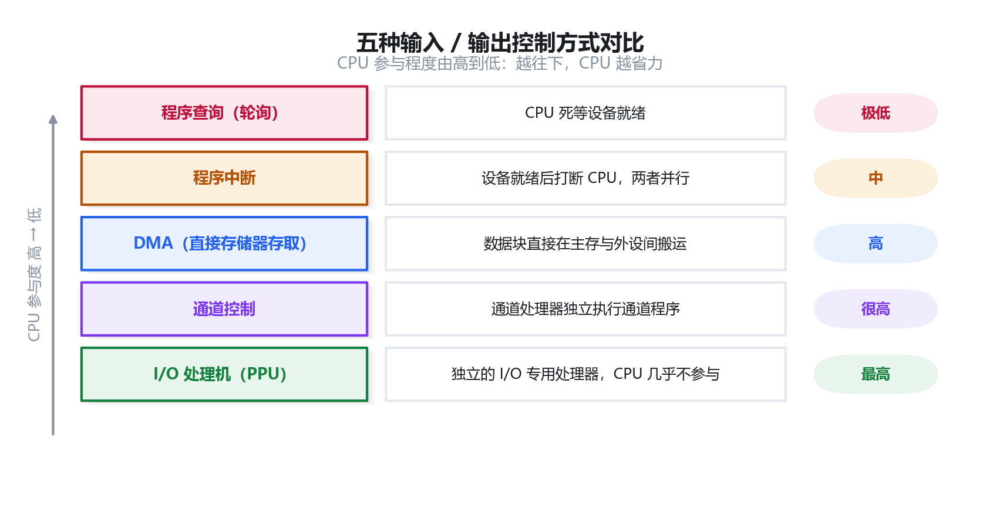
| 方式 | CPU 参与程度 | 数据传送方向 | 特点 |
|---|---|---|---|
| 程序查询（轮询） | 最高，CPU 反复查询状态 | CPU 中转 | 简单但 CPU 利用率极低 |
| 中断方式 | 较高，设备就绪时打断 CPU | CPU 中转 | CPU 不必死等，可并行工作 |
| DMA 方式 | 较低，仅在传送前后干预 | 设备↔主存直接传送 | 不必经过 CPU，效率高 |
| 通道方式 | 低，CPU 只发 I/O 指令 | 通道控制多设备 | 可控制多台设备并行 |
| 外围处理机 | 最低，几乎不干预 | 专用处理机负责 | 独立性最强 |
8.2 DMA 的关键机制
本小节来自教材考点，是 DMA 细节题的要点。
DMA（直接存储器存取）由一个专门的 DMA 控制器接管数据传送。CPU 启动 DMA 后，控制器直接在设备与主存之间搬运数据，直到整批数据传完才向 CPU 发中断报告，因此 CPU 的介入仅发生在「开始」与「结束」两端。
- 周期窃取（周期挪用）：DMA 传送时需占用总线，会「窃取」本该属于 CPU 的存储周期，故 DMA 与 CPU 存在访存竞争。
- 优先级：DMA 请求的优先级通常高于 CPU，以保证高速设备数据不丢失。
- 适用场景：磁盘、显卡等高速、成块数据传送。
8.3 真题演练
查看答案与解析
答案：C
DMA（直接存储器存取）方式下，数据在主存与外设之间直接传送，不经过 CPU，仅由 DMA 控制器在传送前后与 CPU 交互，故 CPU 干预最少。
查看答案与解析
答案：A
DMA 由专门控制器完成成块数据的高速传送，CPU 只在开始和结束时介入，因而速度更高、CPU 开销更少。
查看答案与解析
答案：C
中断方式下，数据的传送仍由 CPU 执行中断服务程序来完成，需要经过 CPU。A、B、D 都是中断方式的正确特征。
数据表示：原码、反码、补码与浮点数
约 6~8 分9.1 机器数为什么需要三种编码
本小节来自教材考点，是理解补码优越性的前提。
计算机用二进制表示数，还要表示正负号。最直观的做法是「用最高位当符号位」（0 表示正、1 表示负），这就是原码。但原码有一个致命缺陷：减法不能直接用加法电路完成，且存在 +0 与 −0 两个零。为解决这个问题，引入了补码。三种编码的对照如下：
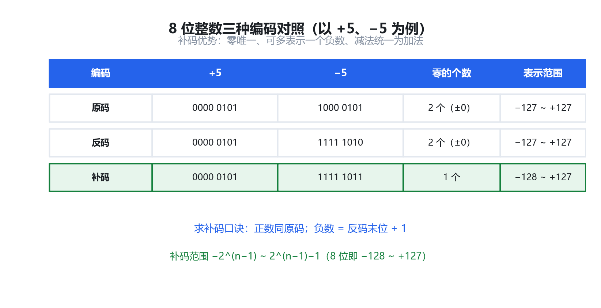
| 编码 | 正数 | 负数 | 零的表示 | 表示范围（8 位） |
|---|---|---|---|---|
| 原码 | 符号位 0 + 数值 | 符号位 1 + 数值 | 有 +0、−0 两个 | −127 ~ +127 |
| 反码 | 同原码 | 符号位不变，数值位取反 | 有 +0、−0 两个 | −127 ~ +127 |
| 补码 | 同原码 | 反码末位加 1 | 零只有一种表示 | −128 ~ +127 |
9.2 补码的两个关键结论
本小节来自教材考点，是补码计算题的得分点。
先看负数补码的求法，以 −5（8 位）为例：原码 1000 0101 → 反码 1111 1010（符号位不变、数值位取反）→ 补码 1111 1011（末位加 1）。
结论② 补码的零唯一，且负数范围比正数多一个（8 位：−128 ~ +127）
逐条解释：结论①说明硬件只需一套加法器即可同时完成加减法，这是补码被广泛采用的根本原因；结论②是因为 1000 0000 这个「−0」的原码位置在补码中被规定表示 −128，从而多出一个负数，故补码负数端比正数端多 1。
求 8 位补码 1111 1011 对应的真值。
最高位为 1 → 是负数。对全部位「取反加 1」求其绝对值：
取反 → 0000 0100 = 4，加 1 → 5
故真值为 −5。
反向验证：−5 的补码应为其绝对值的补码取反加 1，两者互为逆运算，结果一致。
9.3 浮点数表示
本小节来自教材考点，常考浮点数格式与规格化。
浮点数用类似科学计数法的形式表示，由阶符、阶码、数符、尾数四部分组成，可表示范围更大的实数。
其中阶码决定小数点的位置（即数值的量级/范围），尾数决定有效数字的精度。记忆要点：阶码决定「范围」，尾数决定「精度」；浮点数运算前一般要「对阶」（小阶向大阶对齐），这会使精度略有损失。
9.4 真题演练
1111 1011 所表示的十进制真值是（ ）。查看答案与解析
答案：A
最高位为 1，是负数。对 1111 1011 取反得 0000 0100（= 4），再加 1 得 5，故真值为 −5。
查看答案与解析
答案：A
8 位补码范围为 −2⁷ ~ 2⁷−1，即 −128 ~ +127。负数端比正数端多一个，多出的正是 1000 0000 所表示的 −128。
查看答案与解析
答案：B
补码的核心价值在于「变减为加」：[X−Y]补 = [X]补 + [−Y]补，使运算器只需一套加法电路即可完成加减法，大幅简化硬件设计。
查看答案与解析
答案：B
浮点数中，尾数的有效位数决定数值的精度；阶码决定数值的量级（范围）。
本章复习总结与应试策略
冲刺必看10.1 全章知识地图
本小节是对本章全部考点的收束，建议考前反复回看。
本章围绕「计算机系统如何工作」展开，可归为三条主线：
| 主线 | 核心考点 | 对应小节 | 考频 |
|---|---|---|---|
| 组成结构 | 冯诺依曼五大部件、层次结构、SoC、固件 | 1 | 高 |
| 存储体系 | 金字塔、Cache 映射与命中率、虚拟存储 | 2 | 高 |
| 性能提升 | 流水线时空图与公式、总线带宽 | 3、4 | 高 |
| 可靠性保障 | 校验码、串并联可靠性 | 5、6 | 中高 |
| 指令与 I/O | CISC/RISC、寻址方式、五种 I/O 方式 | 7、8 | 高 |
| 数据表示 | 原反补码、浮点数 | 9 | 高 |
10.2 必背公式速查
流水线执行时间：T = (k + n − 1) × Δt
总线带宽 = 总线宽度(字节) × 频率 × 每周期传送次数
海明码位数：2ⁿ ≥ n + k + 1
串联可靠度：R = R₁R₂…Rₙ 并联可靠度：R = 1 − (1−R₁)(1−R₂)…
补码范围：−2ⁿ⁻¹ ~ 2ⁿ⁻¹−1
10.3 三条应试心法
10.4 与后续章节的衔接
以下是承上启下的提示，帮助你建立全局观。
本章讲的是「硬件如何工作」，下一章将进入操作系统——正是操作系统在软件层面管理着本章所说的主存（虚拟存储）、I/O 设备（设备管理）与 CPU（进程调度）。把本章的存储层次、I/O 方式理解透彻，第 2 章的「进程/存储/设备管理」会顺理成章。